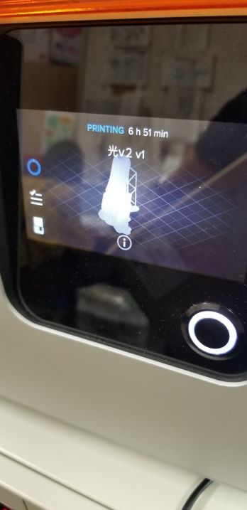
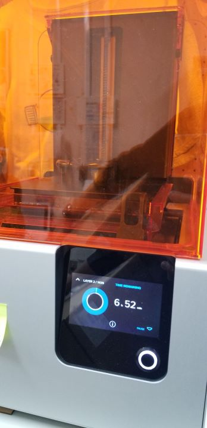
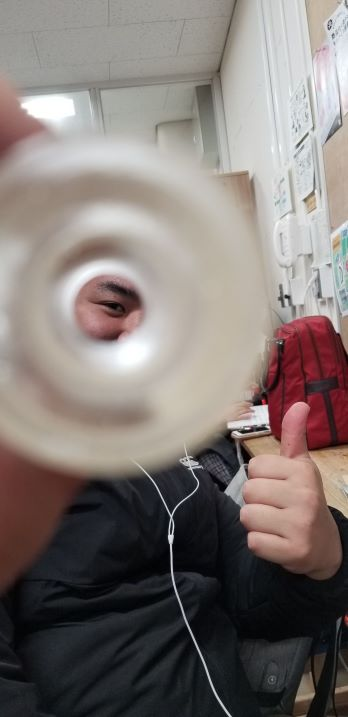
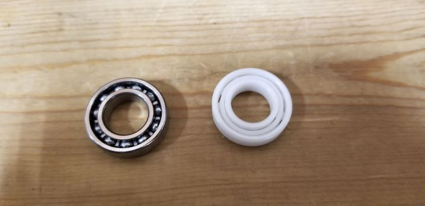

試作5号では、アルティメーカーで製作した本体の一部が、横からの力に弱く、ベアリング圧入時に折れてしまうことがあった。そのため強度を持たせたいパーツには光造形の3Dプリンターを使用することにした。そこで問題になったのが、3Dプリンターの種類によって若干寸法が異なり、今まで合っていたパーツが合わなくなってしまったことだ。少しずつ寸法を合わせ、ちょうどいいところを見つけ出している最中である。



つづいて前回試作品で回転力不足が見られたので、セラミックベアリングを購入した。以前のものとは比べ物にならないほどよく回転するようになった。
